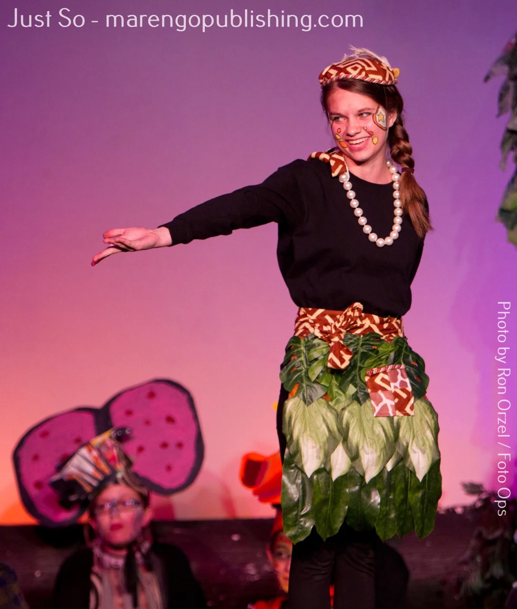
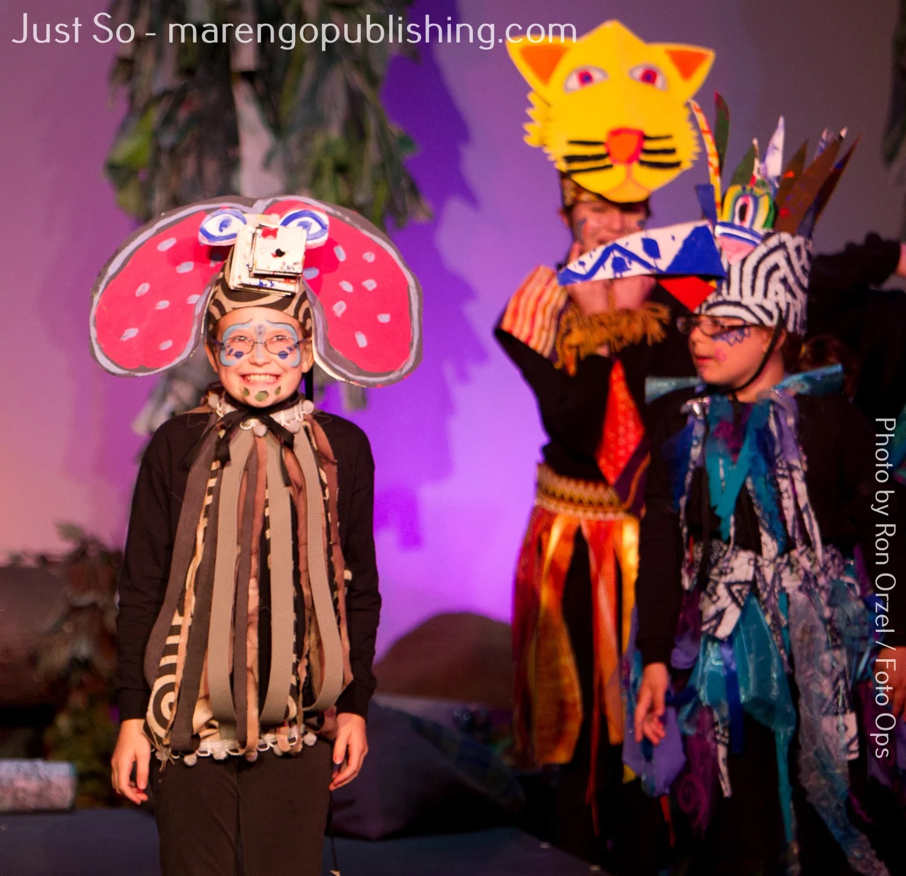
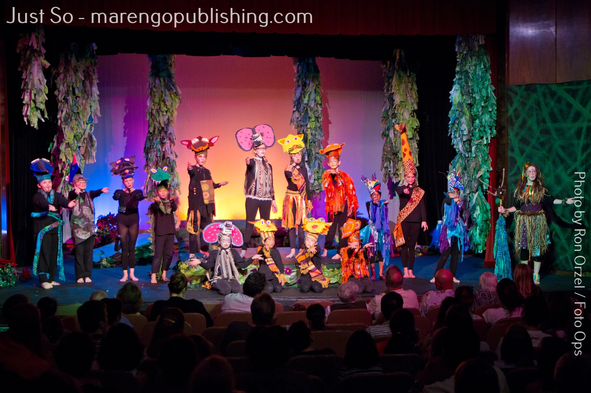
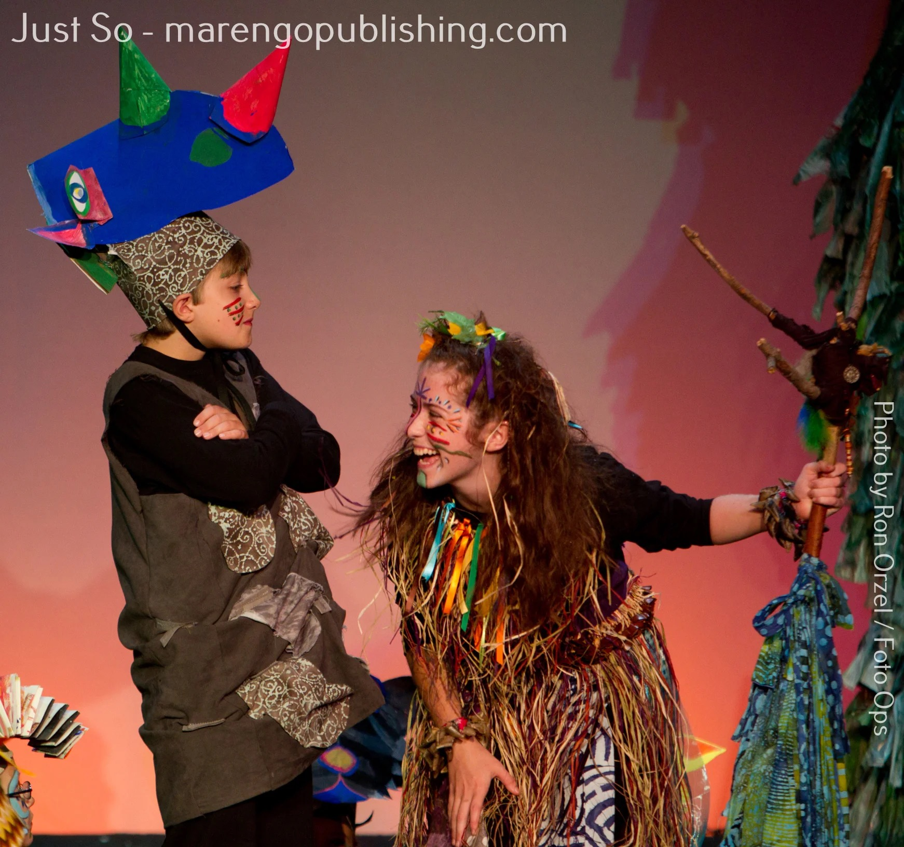
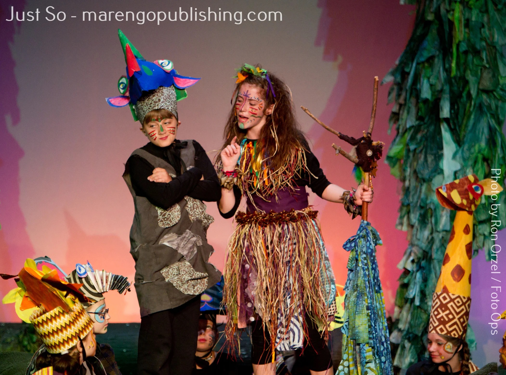
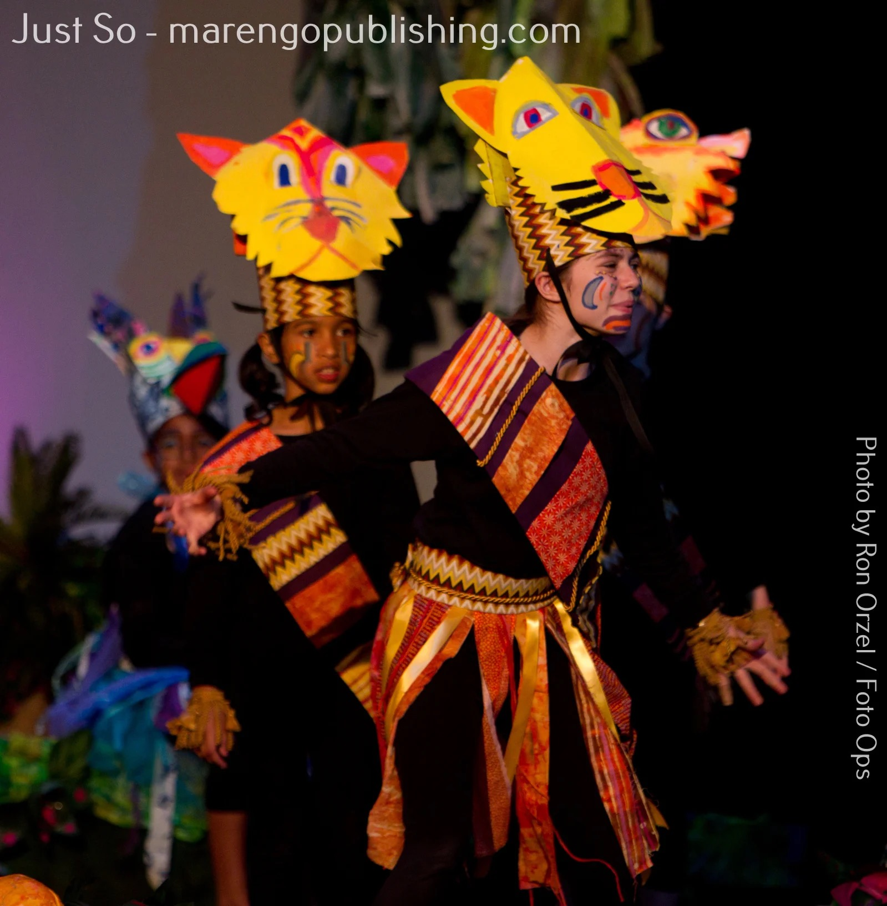
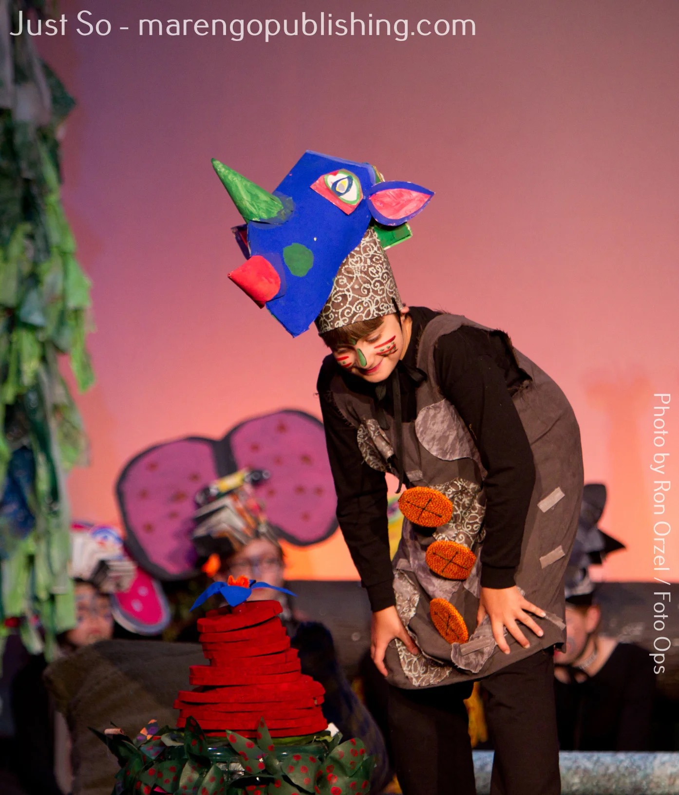
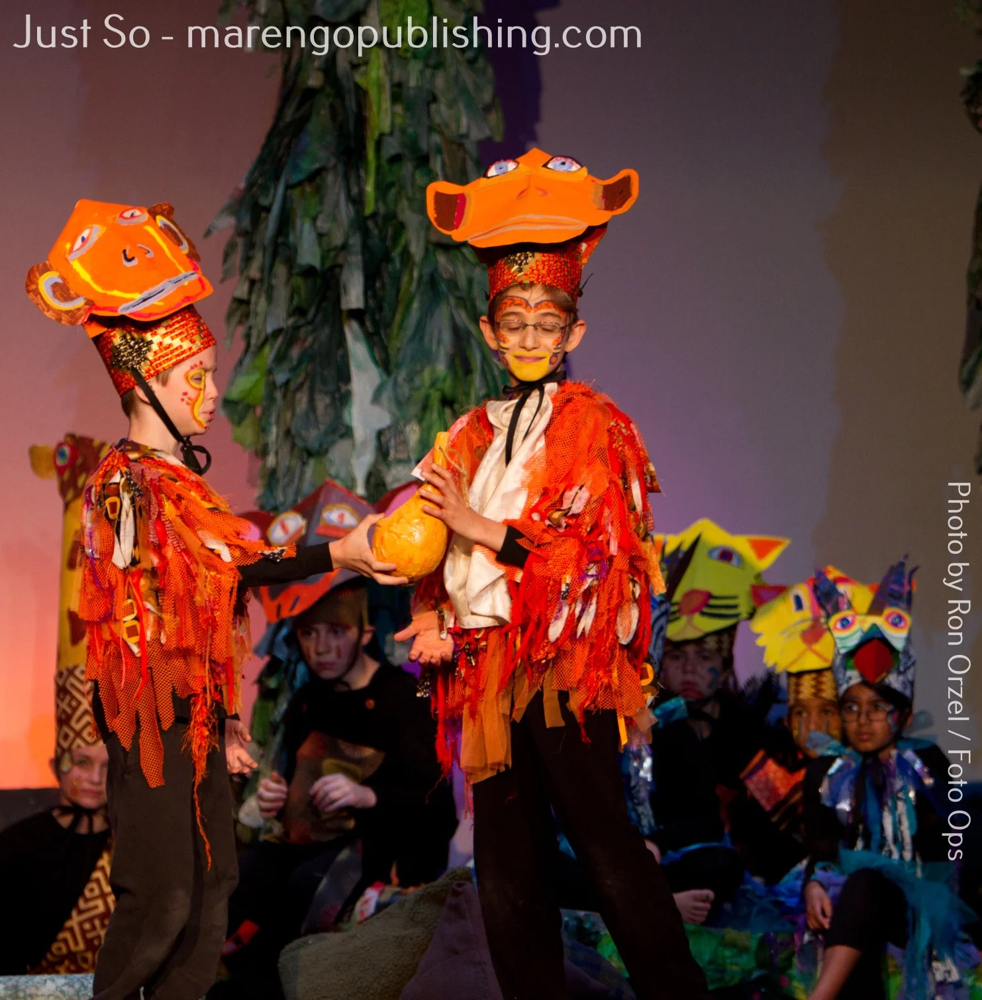

Just So
Rudyard Kipling's beloved stories brought to life on stage
By two-time Richard Rodgers Award winner Dave Hudson
3rd grade and up
25+ roles
70 min
$299
Ages3rd grade and up
Cast25+ roles
Runtime70 min + intermission
Songs9
LevelBeginner Friendly
License$299
About the Show
An adaptation of Rudyard Kipling's classic Just So Stories, exploring how various animals acquired their distinctive features — the kangaroo's legs, the cat's solitary nature, the rhino's itchy skin, and the elephant's trunk. With a large, flexible cast and episodic structure perfect for young performers, Just So is an ideal choice for elementary and middle school programs looking for a show that gives every student a meaningful role.
Why This Works for Young Performers
Flexible casting 25 speaking roles plus flexible chorus; most roles are gender-neutral
Curriculum-ready source material Based on Just So Stories by Rudyard Kipling — connects naturally to classroom learning.
Right level of challenge Accessible for new programs and first-time performers.
Built-in intermission Gives young performers and audiences a natural break.
Curriculum Connections
Pair this show with classroom learning:
- Language Arts — literary adaptation
- Science — animal adaptations
- World Literature — Kipling
Details
| Book & Lyrics | Dave Hudson |
|---|
| Music | Leah Okimoto |
|---|
| Based On | Just So Stories by Rudyard Kipling |
|---|
| Premiere | 2003 — Open Door Repertory Company, Oak Park, Illinois |
|---|
| Productions | Produced coast to coast across the United States |
|---|
Your Production Kit
- ✓ Complete script (printable PDF — unlimited copies for your cast)
- ✓ Piano/vocal score
- ✓ Vocal lead sheets for every song
- ✓ Backing tracks for rehearsal and performance
- ✓ Video recording and YouTube rights included
- ✓ No script rentals. No returns. You keep everything.
Frequently Asked Questions
- Do I need live musicians?
- No. Complete backing tracks are included for both rehearsal and performance. If you have a pianist, the piano/vocal score is included as well.
- Can I adjust the cast size?
- Yes. The 25 speaking roles are fixed, but the chorus is completely flexible — you can have as few as 5 or as many as 50 without changing the script.
- Is this show appropriate for elementary students?
- Absolutely. Just So is designed for 3rd grade and up. The episodic structure, age-appropriate humor, and gender-neutral roles make it ideal for elementary programs.
- Can we perform this outdoors?
- Yes. Just So requires minimal staging and works well in non-traditional spaces. The storytelling format adapts to any environment.
- How long is the rehearsal period?
- Most programs rehearse for 6-8 weeks. The episodic structure allows you to rehearse scenes independently, which is helpful when you can't get the full cast together at every rehearsal.
Production Photos
Photos by Ron Orzel / Foto Ops








Read the Script Free
Tell us your name and organization. We'll send the full script within 24 hours — no commitment, no credit card.
Request Free Perusal
You Might Also Like

Mark Twain's Hannibal, MO reimagined from Becky's perspective
Music by Mark Sutton-Smith
- Ages
- 4th grade and up
- Cast
- 25+ roles
- Runtime
- 80 min + int.
- Level
- Intermediate
American literature
adventure
friendship
courage

A rollicking reimagining of the legends of Greek mythology
Music by Mark Sutton-Smith
- Ages
- 7th grade and up (ages 11+)
- Cast
- 25+ roles
- Runtime
- 90 min + int.
- Level
- Intermediate Advanced
Greek mythology
comedy
heroes
gods and monsters